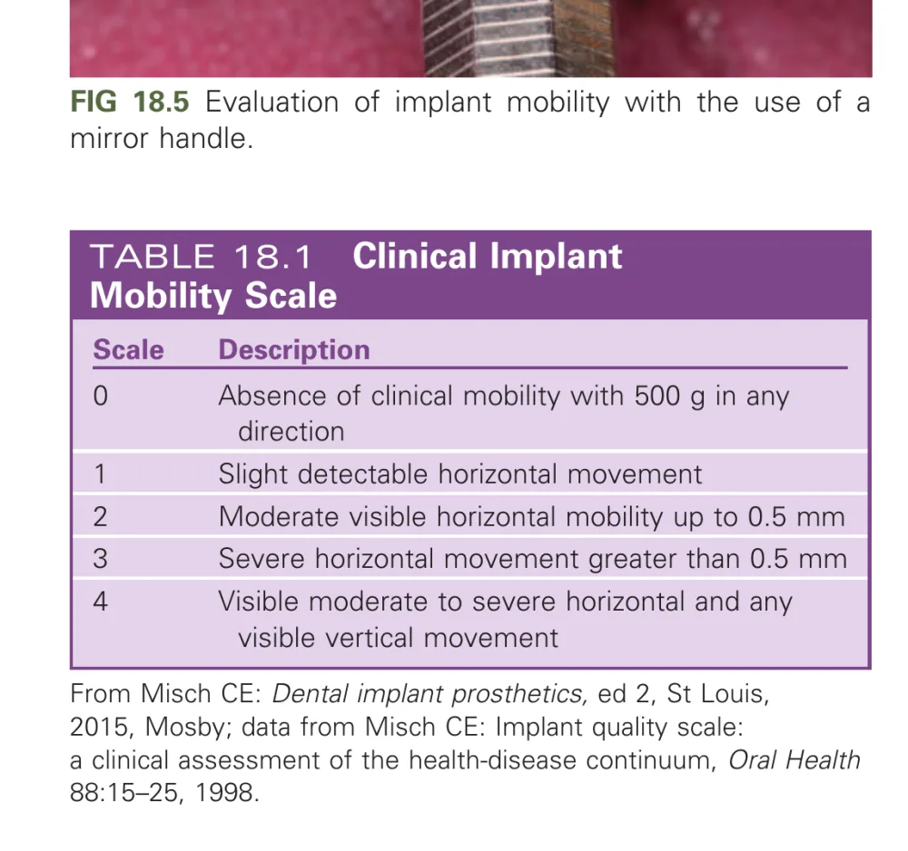
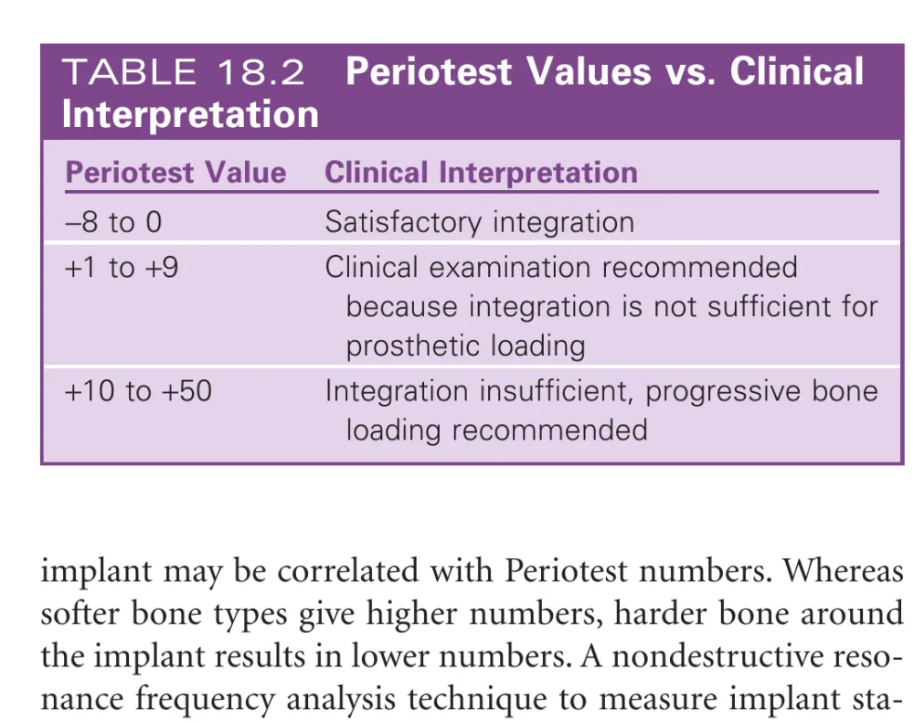

نسخه استخراجشده؛ ترجمه یا تأیید علمی انجام نشده است. وضعیت: captured
بیا با یک هشدار شروع کنیم: «نبود حرکت قابلمشاهدهی بالینی، نبود واقعی هرگونه حرکت را نشان نمیدهد.»
اعداد را ببین:
پس «تحرک صفر» یعنی «زیر آستانهی ۷۳ میکرومتر»، نه «بیحرکت». هر تحرکی که ببینی، از این آستانه گذشته است — و روی ایمپلنت، دیدنِ تحرک یک یافتهی جدی است، نه یک درجهی خفیف.
و جهت حرکت: «شبیه دندان طبیعی، رابط استخوان-ایمپلنت حرکت جانبی بیشتری از حرکت اپیکالی نشان میدهد.»
چرا مزیودیستال بیشتر است؟ دو توضیح دارد: نبود استخوان کورتیکال میان ایمپلنتها در این جهت، در برابر پلیتهای کورتیکال ضخیمتر لابیولینگوال — و همچنین، احتمالاً، فلکسچر اجزای اباتمنت و پیچ. یعنی بخشی از آنچه «تحرک ایمپلنت» مینامیم، ممکن است اصلاً از استخوان نباشد؛ از خم شدن قطعات فلزی باشد.
و تفاوت کیفی حرکت: در یک آزمایش، بار ۵۰۰ گرمی به مدت ۴ ثانیه بر دندانهای قدامی ماگزیلا و ایمپلنتهای استئواینتگره:
در آزمایشی دیگر با باری که طی ۲ ثانیه تدریجاً افزایش مییافت، دندان با بار سبک فوراً حرکت کرد (حرکت اولیه) ولی ایمپلنت در این مرحله حرکت نکرد؛ تنها نیروی سنگینتر ایمپلنت را تدریجاً حرکت داد، شبیه حرکت ثانویهی دندان.
این تفاوت، هستهی بیومکانیک ایمپلنت است: دندان انرژی را میبلعد و آهسته پس میدهد؛ ایمپلنت مثل فنر فولادی فوراً برمیگردد. یعنی ایمپلنت هیچ مکانیسم استهلاکی ندارد — نیرو یکراست به رابط استخوان میرسد.
و مقیاس بالینی تحرک ایمپلنت (جدول ۱۸٫۱)، که با نیروی ۵۰۰ گرم اجرا میشود:
هدف ایدهآل، همیشه IM-0 است. قاعده روشن است: «هدف ایدهآل برای ایمپلنتهای روتفرم باید همواره فیکساسیون رِیجید و وضعیت IM-0 (بدون حرکت) باشد.» توجه کن که IM-4 با حرکت عمودی تعریف میشود — و وقتی ایمپلنت تحرک دارد، بهاحتمال زیاد میان ایمپلنت و استخوان بافت همبند است.

وقتی چشم کافی نیست، دستگاه میآید.
پریوتست (Gulden-Medizinteknik) «یک دستگاه کامپیوتری-مکانیکی است که اثر میرایی یا درجهی تضعیف در برابر اجسام را میسنجد، با ایجاد نیروی ۱۲ تا ۱۸ نیوتن علیه یک وسیلهی پیستونمانند، که سپس مسافت عقبنشینی پیستون به درون محفظه پس از برخورد با جسم را اندازه میگیرد.»
منطق دستگاه ساده است: «یک سطح نرم یا جسم متحرک، ثبتهای بالاتری از یک جسم سخت یا رِیجید میدهد.» دامنهی ثبتها از منفی ۸ تا مثبت ۵۰ است.
و اعداد مرجع: دندانهای با تحرک بالینی صفر معمولاً پریوتست ۵ تا ۹ دارند. درجه یا نبود حرکت بالینی پیرامون ایمپلنت با مقادیر منفی ۸ تا مثبت ۹ متناظر است — دامنهای از ۱۷ واحد.
تفسیر بالینی (جدول ۱۸٫۲):
به تفاوت دو ردیف نخست دقت کن؛ اشتباه رایجی است: عدد مثبتِ تکرقمی شکست نیست — دعوت به معاینه است. تنها از +۱۰ به بالا حکم «اینتگریشن ناکافی» صادر میشود.
و رابطه با تراکم استخوان: «تراکم استخوان پیرامون ایمپلنت ممکن است با اعداد پریوتست همبسته باشد. انواع نرمتر استخوان اعداد بالاتر و استخوان سختتر پیرامون ایمپلنت اعداد پایینتر میدهند.»
پس پریوتست دو چیز را با هم میسنجد: اینتگریشن و کیفیت استخوان. یک عدد بالا در استخوان D4 لزوماً به معنای شکست اینتگریشن نیست — باید با تصویر بالینی خوانده شود.
و روش دوم — RFA: «یک تکنیک آنالیز فرکانس رزونانس غیرتخریبی برای سنجش پایداری ایمپلنت و استئواینتگریشن نیز به حرفه معرفی شده و اطلاعات ارزشمند مشابهی دربارهی حرکت بالینی و تراکم استخوان پیرامون ایمپلنتها میدهد.»
مقیاس ISQ (Osstell): عددی از ۱ تا ۱۰۰ که پایداری ایمپلنت را میسنجد و همبستگی غیرخطی با میکروموبیلیتی دارد:
و روش کار Osstell: یک SmartPeg اختصاصی هر ایمپلنت با هند-درایور و گشتاور دستی در ایمپلنت بسته میشود، دسته برداشته میشود، و ریدر در نزدیکی پگ و بدون تماس با آن قرار میگیرد. اگر ریدر پگ را لمس کند، خوانش نامعتبر است.
و یک مقایسهی مفهومی: پریوتست ضربه میزند و میرایی را میسنجد؛ Osstell مرتعش میکند و فرکانس رزونانس را میسنجد. جهت مقیاسها هم برعکس است — در پریوتست پایینتر بهتر است، در ISQ بالاتر بهتر.
